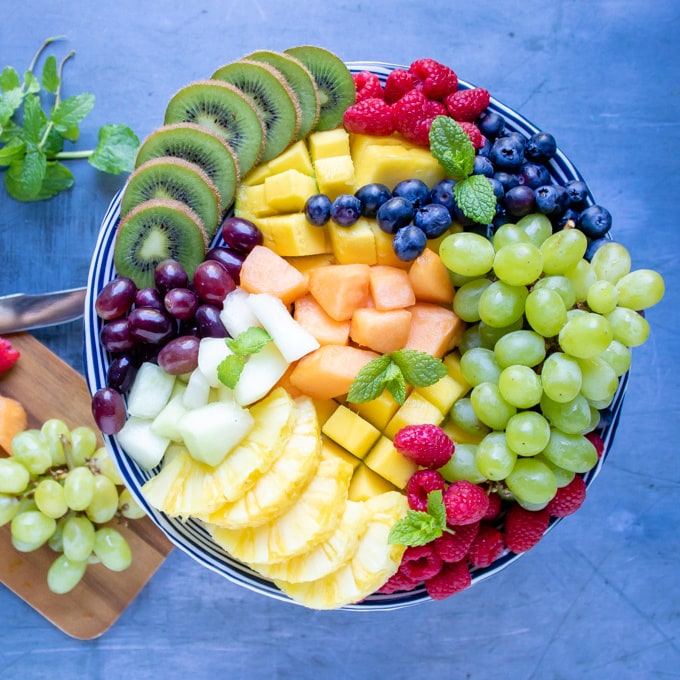

Code for Digital Image Processing Histogram Operations
Table of Contents
These are the code snippets used in Histogram Operations
part of Digital Image Processing.
Introduction
The following is a custom package written to handle plotting and other functions required by the lecture.
import ChalcedonPy as cp # custom-pakcage for lecture materials and publications SAVE_PATH = "Histogram-Operations" # sets the default save path style="web" # sets the default rcParams stylce sheet cp.plot_settings(size=None, style=style) # set global style for matplotlib
Histogram Generation from Image
import cv2 as cv import numpy as np from matplotlib import pyplot as plt
Let's also deifind our image for to use in the following exercises
image = cv.imread('Fruit.jpg') cv.imwrite("images/Histogram-Operations/reference-image.png", image)

As can be seen from this image we have quite some blue environment (around the plate) and some nice (health) greenery with some on the darker side (kiwis) and some on the brighter side (grapes).
It is also possible to percieve the vivid reds coming from the rapsberries.
img = cv.imread('Fruit.jpg', cv.IMREAD_GRAYSCALE) plot_settings() plt.hist(img.ravel(),256,[0,256]) plt.xlabel("Pixel Value") plt.ylabel("Count") plt.title("Histogram of Grey Image") plt.show()
plt.figure(figsize=(12,5)) plt.subplot(1,2,1) plt.imshow(img) plot_settings() plt.title('Windowed Sine Wave') plt.subplot(1,2,2) plt.hist(img.ravel(),256,[0,256]) plot_settings() plt.title('Also a Windowed Sine Wave') plt.show()
We can also observe the colour channels of the histogram
img = cv.imread('Fruit.jpg') color = ('b','g','r') for i,col in enumerate(color): histr = cv.calcHist([img],[i],None,[256],[0,256]) plt.plot(histr,color = col) plt.xlim([0,256]) plot_settings() plt.show()
Application of Masks
We used cv.calcHist() to find the histogram of the full image.
What if you want to find histograms of some regions of an image?
Just create a mask image with white color on the region you want to find histogram and black otherwise. Then pass this as the mask.
# create a mask mask = np.zeros(img.shape[:2], np.uint8) mask[100:300, 100:400] = 255 masked_img = cv.bitwise_and(img,img,mask = mask) # Calculate histogram with mask and without mask # Check third argument for mask hist_full = cv.calcHist([img],[0],None,[256],[0,256]) hist_mask = cv.calcHist([img],[0],mask,[256],[0,256]) plt.subplot(221), plt.imshow(img, 'gray') plt.subplot(222), plt.imshow(mask,'gray') plt.subplot(223), plt.imshow(masked_img, 'gray') plt.subplot(224), plt.plot(hist_full), plt.plot(hist_mask) plt.xlim([0,256]) plt.show()
Histogram Equalisation
hist,bins = np.histogram(img.flatten(),256,[0,256]) cdf = hist.cumsum() cdf_normalized = cdf * float(hist.max()) / cdf.max() plt.plot(cdf_normalized, color = 'b') plt.hist(img.flatten(),256,[0,256], color = 'r') plt.xlim([0,256]) plt.legend(('cdf','histogram'), loc = 'upper left') plt.show()
2D Histograms
hsv = cv.cvtColor(img,cv.COLOR_BGR2HSV) hist = cv.calcHist([hsv], [0, 1], None, [180, 256], [0, 180, 0, 256]) plt.imshow(hist,interpolation = 'nearest') plt.show()
Bonus: Steganography
As Wikipedia states,
Steganography is the practice of concealing a message within another message or a physical object.
Today, we are going to do an implementation. We will make a program that writes text to images and reads it from there.
We assign pixel values to each possible character. This is more of a proof of concept but anyone is welcome to improve on it.
from PIL import Image # For reading images import string # constants containing letters and digits.
Now we use the Image class to open the image at the path the user has specified. We then get the width and height.
We first have two variables that contain the RGB tuples of the starting and ending pixel. This is used to know where the message starts and ends, but we currently only use the endingPixel variable.
After that, we also define two dictionaries that will contain the relations between letters and pixels.
To fill these dictionaries, we use a loop. We enumerate over the , digits, and ' ' and store them in the dictionaries.
# Open the image. image = Image.open("Fruit.jpg") # Get the image size and save it. width, height = image.size startingPixel = (10, 10, 255) endingPixel = (255, 20, 20) # Dictionary which hold the relations between pixels and characters lettersToPixels = {} pixelsToLetters = {} # Making the relations using the string library for i, letter in enumerate(string.ascii_letters + string.digits + ' '): lettersToPixels[letter] = i pixelsToLetters[i] = letter
Now let us get to hiding messages in images. If the mode specified by the user is write, we know the user wants to write. But we also check if the text was set. After that, we also assert if the text length is greater than the image width.
After that, we draw the starting pixel onto the image at position (0, 0), which is the top left.
After that, we loop / enumerate over the text the user has given us. We draw the pixel representing this character at (index+1, 0), meaning the top row of pixels will contain the message. We added one because we already drew a pixel at (0, 0). The color is made up of (11, lettersToPixels[letter], 11), so the middle color, green, will change depending on the letter.
At the end of the writing part, we also draw the ending pixel after the letters and save the image.
def write(message): assert len(message) < width # Draw the starting Pixel image.putpixel((0, 0), startingPixel) # Draw a pixel for each letter in the test for index, letter in enumerate(message): # The Middle value (g = green) is the number in the dictionary image.putpixel((index+1, 0), (11, lettersToPixels[letter], 11)) # Draw the ending Pixel image.putpixel((index+2, 0), endingPixel) # Save the image to the same place image.save("images/Histogram-Operations/encrypted-fruit.png") write("hello")
def read(): image = Image.open("images/Histogram-Operations/encrypted-fruit.png") text = '' index = 1 while True: # Loop throug each pixel in the top row pixel = image.getpixel((index, 0)) # if the pixel is the ending pixel, we break the loop if pixel == endingPixel: break try: # Get the letter from the dictionary with the g (green) value. text += pixelsToLetters[pixel[1]] except: pass index += 1 # Print out the text print(text) read()
hello